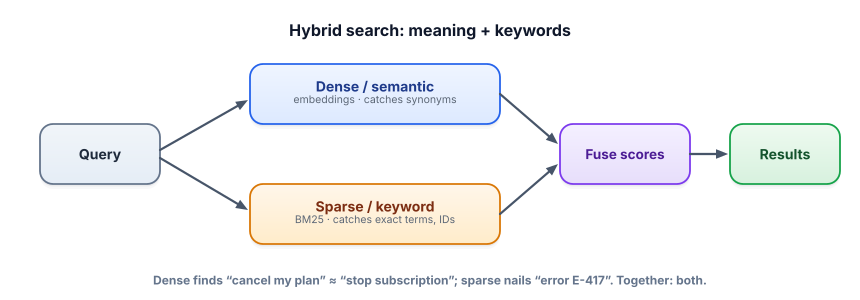

Hybrid search
Semantic search has a blind spot: exact strings. Product codes, names, error IDs, rare jargon — embeddings blur them together. Keyword search nails them but misses paraphrases. Hybrid search runs both and fuses the results, so you stop choosing between meaning and precision.
Why one kind of search isn’t enough
Dense (embedding) retrieval is brilliant at meaning: it matches “stop paying” to “cancel subscription.” But ask it for error code E-417 or SKU X200-BLK, and it often fails — these tokens carry little semantic meaning, so their vectors don’t stand out, and a near-miss code looks just as “similar.” Meanwhile classic keyword search matches exact terms perfectly but is helpless with synonyms (“stop paying” shares no words with “cancel subscription”). The two methods fail in opposite situations — which is exactly why combining them is so effective.
Dense retrieval uses embedding vectors and cosine similarity (semantic match). Sparse retrieval uses keyword statistics — the classic algorithm is BM25, which scores documents by how many query terms they contain, weighted by how rare and frequent those terms are. Hybrid search runs both retrievers and fuses their rankings into one list. A popular, robust fusion method is Reciprocal Rank Fusion (RRF), which combines results by their ranks rather than their (incomparable) raw scores.
Two friends help you find a song. One remembers lyrics exactly but only if you say the precise words. The other understands "that sad song about a long drive" but mixes up titles. Ask both and combine their lists, and you find almost anything. RRF is the rule "a song both friends put near the top wins". The analogy breaks because friends can talk to each other and agree; RRF just adds up positions and never knows why either list ranked something.

Which method wins when
See the complementary strengths directly:
Dense vs. sparse vs. hybrid
Two queries, each a failure case for one method. Watch how hybrid gets both right.
Hybrid retrieval with two free libraries and rank-based fusion:
!pip install rank-bm25 sentence-transformers numpy
import numpy as np
from rank_bm25 import BM25Okapi
from sentence_transformers import SentenceTransformer
chunks = [...] # your corpus
bi = SentenceTransformer("all-MiniLM-L6-v2")
dense_index = bi.encode(chunks, normalize_embeddings=True)
bm25 = BM25Okapi([c.lower().split() for c in chunks])
def rrf(rank_lists, k=60):
"""Reciprocal Rank Fusion: combine rankings by 1/(k+rank)."""
scores = {}
for ranking in rank_lists:
for rank, idx in enumerate(ranking):
scores[idx] = scores.get(idx, 0) + 1.0 / (k + rank)
return sorted(scores, key=scores.get, reverse=True)
def hybrid(query, top=5):
dense_rank = np.argsort(dense_index @ bi.encode([query], normalize_embeddings=True)[0])[::-1]
sparse_rank = np.argsort(bm25.get_scores(query.lower().split()))[::-1]
fused = rrf([list(dense_rank), list(sparse_rank)])
return [chunks[i] for i in fused[:top]]RRF is the workhorse because it needs no score calibration — dense cosines (0–1) and BM25 scores (unbounded) aren’t comparable, but their ranks always are. Add a reranker (Lesson 3.5) on top of the fused list for the strongest pipeline.
Assumptions: 4 M chunks of API docs, a large share of queries containing identifiers like ERR_2043 or useEffect, dense ANN p95 = 12 ms, BM25 p95 = 8 ms, top 100 from each.
- Run both in parallel. Wall-clock is the slower of the two, 12 ms, not 20 ms. Fusion over at most 200 ids is microseconds.
- RRF with k = 60, ranks starting at 1 (the form in Cormack et al., 2009). Three chunks:
- A: dense rank 1, BM25 rank 4. Score = 1/61 + 1/64 = 0.016393 + 0.015625 = 0.032018.
- B: dense rank 2, not in BM25's top 100. Score = 1/62 = 0.016129.
- C: BM25 rank 1 (exact error code match), dense rank 30. Score = 1/61 + 1/90 = 0.016393 + 0.011111 = 0.027504.
- Why not add raw scores? Suppose A's cosine is 0.82 and BM25 gives C a score of 17.4. Adding them lets BM25's unbounded scale drown cosine completely. Ranks are comparable; raw scores are not.
- What k does. With k = 60, rank 1 scores 1/61 and rank 10 scores 1/70, only 13% less, so being in both lists matters more than being first in one. A small k such as 5 makes rank 1 (1/6) worth 2.5 times rank 10 (1/15), trusting each list's top more.
- Then rerank. Send the fused top 50 to the cross-encoder from Lesson 3.5 and keep 5.
(The page's code counts ranks from 0, so its scores are 1/60, 1/61, ...; the ordering effect is negligible.)
- Dense catches meaning/synonyms; sparse (BM25) catches exact terms, codes, names, rare words.
- They fail in opposite cases, so hybrid search (run both, fuse) is more robust than either alone.
- RRF fuses by rank, sidestepping the fact that dense and sparse scores aren’t comparable.
- Hybrid especially helps with identifiers, jargon, and mixed natural-language + keyword queries.
- Best pipeline: hybrid retrieve → rerank → ground.
Users search your docs for exact error codes like ERR_2043 and your pure-semantic retriever keeps returning vaguely-related errors instead. Best fix?
A query with an exact product code fails on pure vector search. Why does hybrid fix it?
With RRF (k = 60, ranks from 1), chunk X is rank 1 in BM25 only. Chunk Y is rank 5 in both dense and BM25. Which ranks higher after fusion?
1. Give two query examples from a developer-docs RAG where keyword search beats semantic, and two where semantic beats keyword.
2. Why does RRF combine rankings instead of just adding the dense and sparse scores together?
3. You add hybrid search and quality improves on identifier queries but slightly worsens on some natural-language ones. What knob might fix it?
▸ Show solutions & reasoning
1. Keyword wins: exact symbol/function names (useEffect), error codes (ENOENT), version strings (v2.3.1) — literal tokens with little semantic content. Semantic wins: “how do I run code when a component mounts?” (→ useEffect), “why does my file-not-found error happen?”, “stop the app from crashing on startup” — intent expressed in the user’s own words. Real users mix both, which is why you want both retrievers.
2. Dense cosine scores live in roughly 0–1; BM25 scores are unbounded and depend on term rarity — adding them directly lets one method’s scale dominate arbitrarily. RRF uses only each document’s rank in each list (via 1/(k+rank)), which is unit-free and comparable across methods, so it fuses robustly without fragile score normalization.
3. Re-weight the fusion: if keyword results are crowding out good semantic matches on natural-language queries, give the dense ranking more weight (or BM25 less) in the fusion — many implementations support per-retriever weights, or you can adjust RRF’s k. Tune the balance against an evaluation set (Lesson 3.8) rather than by feel, since the right mix depends on your query distribution.
The dense/sparse split is softening. Learned sparse models like SPLADE keep the exact-term precision and interpretability of keyword search but use a trained model to also include important related terms (a kind of learned query expansion), narrowing the synonym gap. And many vector databases now offer hybrid search natively, so you don’t hand-roll fusion. But the engineering judgment stays the same: know why each retriever exists, and reach for hybrid when your queries mix natural language with literal identifiers — which, for technical and enterprise search, is almost always.
Two cautions. Fusion can’t rescue content that neither retriever finds — if the right chunk is missing from both candidate sets (bad chunking, wrong embedding model), hybrid won’t conjure it; you’re back to recall fundamentals. And more retrievers means more moving parts to tune and monitor; add hybrid because your evaluation shows a real gap on identifier or mixed queries, not because it sounds sophisticated. As always in RAG, let measurement — not vibes — decide which knobs you turn.
labs/03_rag_local.pyFree and offline once set up: Ollama with qwen2.5:7b, plus the packages in labs/README.md. From the course folder:
python labs/03_rag_local.pyWhat to look for: Section 4 runs dense, hand-rolled BM25 and RRF hybrid on 20 gold queries and prints where the right document lands in each top 3, plus hit@3 with 95% intervals. On our run with n=20: dense 20/20, BM25 18/20 and hybrid 18/20. The 95% intervals overlap heavily (84-100% vs 70-97%), so this is not evidence that dense beats hybrid in general; it shows that fusion can lose a hit a good single retriever had. Change rrf_k in raglib.Index.hybrid from 60 to 5 and see how much the fused order shifts toward each list's top results.
Small samples: these labs use 5 to 20 cases so they run in minutes on a laptop. Where they report a rate, they print n and a 95% Wilson interval. Read them as a demonstration of the mechanism, not as a measured rate for your system; for that you need hundreds of cases and several seeds.
▸ Recorded output (our run, 2026-11-03, qwen2.5:7b on a laptop GPU)
out of the top 3. On this tiny corpus dense already wins; hybrid earns its keep on big corpora full of
near-identical codes (SKUs, error ids) that embeddings blur. Never assume: measure hit@k (lab 06).
5) Grounded answers with citations, and a refusal when retrieval is weak
Q: I was charged twice for one order. What happens now?
A: If you were charged twice for one order, the duplicate payment is reversed automatically within 3 business days [pay-01#0]. If it is not reversed after 3 business days, raise a billing ticket with both transaction ids.
citations=['pay-01#0'] all-cited-ids-were-retrieved=True
Q: Can I change my delivery address after the order has shipped?
A: No, you cannot change your delivery address after the order has shipped. According to [ship-03#0], the address can only be changed before the order is packed.
citations=['ship-03#0'] all-cited-ids-were-retrieved=True
Q: Do you deliver to Antarctica by drone?
A: I don't know based on our policies. (refused before calling the LLM: best cosine 0.27 < 0.35)
citations=[] all-cited-ids-were-retrieved=True
Look: every factual sentence carries an id you can check; the off-topic question is refused
cheaply by the retrieval threshold, so the model never gets a chance to make something up.Your numbers will differ a little run to run. Full log: labs/outputs. Source: labs/03_rag_local.py.
Warm-up. Compute RRF scores (k = 60, ranks from 1) for: P = dense 3, BM25 2; Q = dense 1 only; R = BM25 1 only. Give the fused order.
▸ Solution
P = 1/63 + 1/62 = 0.015873 + 0.016129 = 0.032002. Q = 1/61 = 0.016393. R = 1/61 = 0.016393. Order: P first, then Q and R tied. P wins because both retrievers agree on it.
Transfer. Your BM25 tokenizer lowercases and splits on whitespace. Users search for "ERR_2043" and "X200-BLK", and docs write "err 2043" and "X200 BLK". BM25 misses them. Fix it without hurting normal words.
▸ Solution
Normalize identifiers the same way on both sides. Options: split on punctuation as well as spaces, so ERR_2043 becomes err, 2043 and X200-BLK becomes x200, blk; also index the joined form (err2043, x200blk) as an extra token so exact searches still match strongly. Apply the identical analyzer to queries and documents. Test on a golden set of identifier queries and a set of normal language queries, and check recall moves up on the first without dropping on the second. Sparse retrieval is only as good as its tokenizer.
Stretch. Hybrid search improved identifier queries but worsened conversational ones by 4 points of recall@10. Design a fix and how you will tune it without overfitting.
▸ Solution
Make fusion weighted or query-aware. Weighted RRF multiplies each list's contribution, e.g. score = w_dense/(k + r_dense) + w_bm25/(k + r_bm25). Alternatively classify the query (contains identifier-like tokens or not, by a regex) and choose weights per class. Tune the weights on a training split of the golden set, then report on a held-out split that was never used for tuning, sliced by query type. Keep the change only if the held-out conversational slice recovers and the identifier slice keeps its gain.
Junior When does keyword search beat embedding search?
▸ Model answer
When the query depends on exact strings that carry little meaning: error codes, SKUs, function names, version numbers, rare names. Embeddings place ERR_2043 and ERR_2044 very close together, so dense search returns a near miss. BM25 scores documents by the exact terms they share with the query, weighted by how rare the terms are, so it nails the literal match. Embeddings win on paraphrase, where the user's words differ from the document's. That is why we often run both.
Mid Explain Reciprocal Rank Fusion and why it is popular.
▸ Model answer
RRF combines several ranked lists by giving each document 1/(k + rank) for every list it appears in, then sorting by the sum. k is a constant, 60 in the original paper. It is popular because it needs no score calibration: BM25 scores are unbounded and cosine sits in a small range, so adding raw scores lets one scale dominate. Ranks are always comparable. It also rewards agreement between retrievers, which is a strong relevance signal. It is a few lines of code and a good default before trying learned fusion.
Senior Would you build hybrid search for every RAG system? How do you decide?
▸ Model answer
No. Hybrid adds a second index, a tokenizer to maintain, fusion weights to tune, and more to monitor. I decide from the query log and the eval. I tag a sample of real queries by type, and if identifiers or exact phrases are common, or if dense recall is weak on that slice, hybrid is worth it, which for technical or enterprise search it nearly always is. For a consumer FAQ of plain-language questions, dense plus a reranker may be enough. I also check whether my vector store offers native hybrid, which cuts the operational cost. Either way, it ships only if the sliced eval shows a real gain.
- Cormack, Clarke and Buettcher, Reciprocal Rank Fusion outperforms Condorcet and individual rank learning methods (SIGIR 2009) - University of Waterloo
- Formal et al., SPLADE: Sparse Lexical and Expansion Model for First Stage Ranking (2021) - arXiv
- Thakur et al., BEIR benchmark (BM25 vs dense across domains) - arXiv
You can now find the right chunks reliably. The final step is making the model use them faithfully and tell you where each fact came from. Next: grounding & citations.